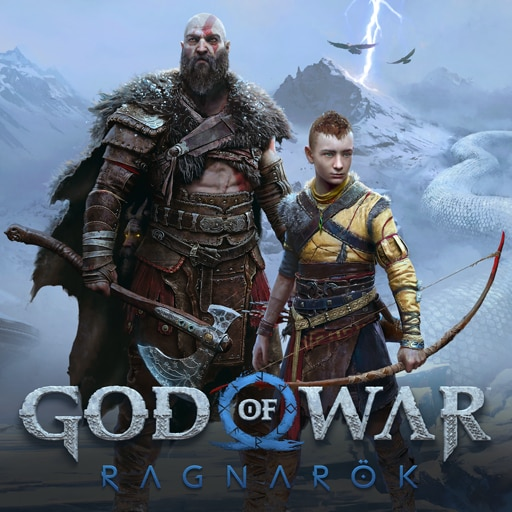
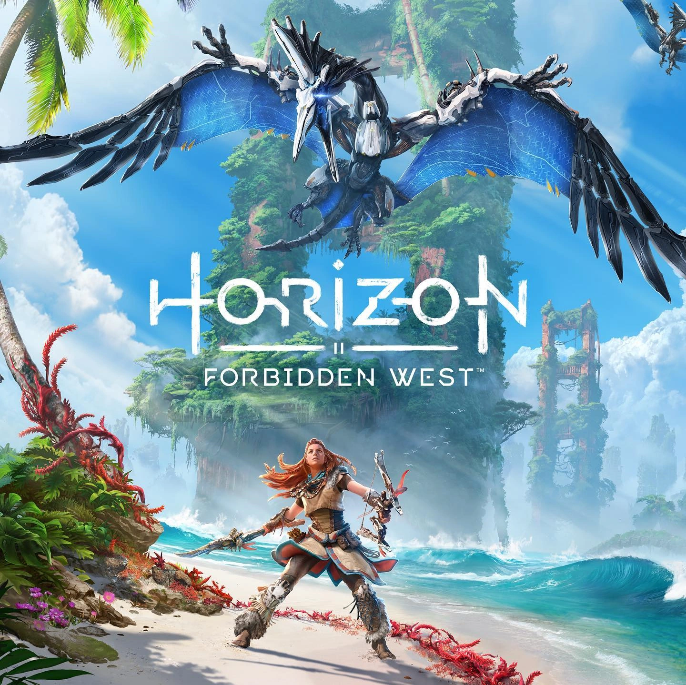
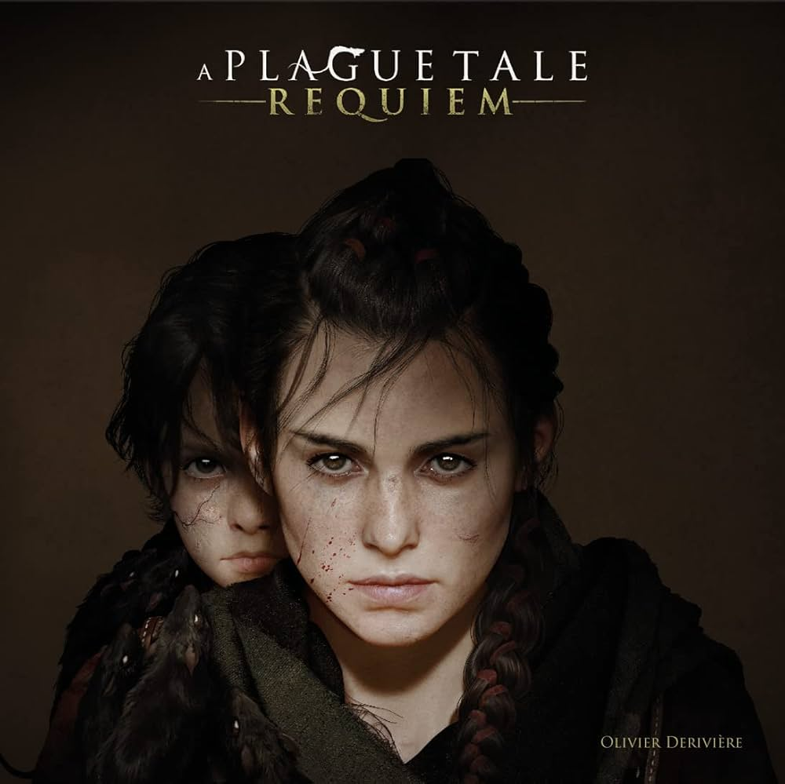

Vincitore: Elden Ring

Data di rilascio: 25 febbraio 2022
Genere: Action RPG, Soulslike
Tema: Dark fantasy, Medievale
Sviluppo: FromSoftware
Pubblicazione: Bandai Namco Entertainment
Descrizione: Un mondo aperto vastissimo, misterioso e privo di compromessi.
Invita all’esplorazione pura, premiando curiosità e osservazione.
La narrativa ambientale sostituisce le spiegazioni dirette, rendendo il mondo credibile.
Il combattimento è esigente ma estremamente soddisfacente.
Ogni scoperta sembra conquistata, mai concessa.
Un’opera monumentale che ha ridefinito l’action RPG contemporaneo.
Altri candidati:

God of War Ragnarök
Segui Kratos e Atreus in un’epica avventura attraverso i nove mondi. Combattimenti spettacolari, una storia intensa di famiglia e vendetta, e ambientazioni mozzafiato nel mondo dei miti norreni.

Horizon Forbidden West
Un’avventura open world in un futuro post-apocalittico. Guida Aloy tra terre selvagge e città decadenti, affrontando macchine pericolose e scoprendo antichi segreti della civiltà perduta.

Stray
Gioca nei panni di un gatto errante in una città futuristica abitata da robot. Esplora vicoli, risolvi enigmi e vivi un’avventura unica piena di atmosfera e dettagli affascinanti.

A Plague Tale: Requiem
Segui Amicia e Hugo in un viaggio oscuro attraverso un’Europa devastata dalla peste. Fuga, stealth e sopravvivenza tra topi e nemici, con una storia intensa e toccante.

Xenoblade Chronicles 3
Un JRPG epico con mondi enormi da esplorare. Combattimenti strategici in tempo reale, una trama emozionante e personaggi indimenticabili in un’avventura memorabile tra guerra e amicizia.